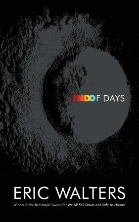

Book Review

End of Days written by Eric Walters is a book about the end the our planet, where many people are working together to come up with a solution to save all of humanity. My task was to read and examine the use of survival throughout the book. To display my understanding I wrote an essay (this can be seen down below). To write my essay I refered to the rubric and my book review template provided by my teacher.
End of Days by Eric Walters
Survival is a primary fundamental of life which can lead to a better lifestyle. The book being analyzed is End of Days by Eric Walters, and the topic being focused on is Survival. Eric Walters is a Canadian author from the city of Mississauga, and he has published over 80 novels and picture books. Many of these books are based on the topic of survival. Some of these books include: The Rule of Three, We All Fall Down, and Camp X. The title of the book End of Days relates to the topic being analyzed because the phrase End of Days implies the end is coming where survival is most essential. In the novel, the end of the world when survival skills are a necessity. The theme that will be explored is Survival is a state of mind in which many can go to extreme lengths to stay alive. This is the theme of the novel because the book starts off with a young boy named Billy who is leading this "gang" he calls a family. The reason that this gang exists is because the whole planet has gone into complete chaos. People have become selfish and kill each other to gain their acquisition. This novel is very insightful into how the world might look like, when it is determined that everything will come to an end. This book was a very interesting read. It was quite engaging with the tone set by the author which was kept consistent, the character development that occurred throughout the story, and the conflicts that kept arising. The book kept increasing the suspense and would always leave each chapter with a cliff-hanger to interest the reader.
It was identified that the world was going to be hit by a massive asteroid, which would cause the extinction of the Earth itself, along with humankind, and all wildlife living on Earth. As soon as that was discovered, many astrophysicists, mathematicians, and astronomers faked their death to solely be able to work on a plan to divert the oncoming asteroid, these people work as part of the IARI (International Aerospace Research Institute). Meanwhile in New York, Billy, a 16-year-old leader is captured by the NYPD (New York Police Department) who was handed over to a group of men, who in turn transport him to an isolated facility where Joshua Fitchett resided. Joshua is world's wealthiest and one of the most intelligent person. Here Billy found out why he was captured, to fulfill a mission created by Joshua to save mankind. Billy's objective for the "mission" was to be the leader of the group, a group for 100 kids about his age. The group of kids would be launched into space and their mission was to survive the asteroid collision by staying in the space station for 20 years. While that plan was being developed, the IARI were trying a different method to save Earth, they were trying to blow up the asteroid so that it would not come into contact with Earth.
As Dalmer said "Despite being set in an environment which none of the readers have yet to encounter, Walters impressively creates an atmosphere that engulfs readers, allowing them to better identify with the characters and their situations" (Dalmer). Dalmer liked this book because no one really knows how it would really happen in such a time and place, but the author effectively creates a vivid story in your head, as if it were to be a movie. This is agreeable and an accurate review about the setting of the story because while reading the story, descriptive imagery was being created. "What I most enjoyed was the feeling of compounded suspense as I was alerted with each passing chapter to how many years, days or hours were left until impact" (Dalmer). This is true because the book was written in a format where time would sometimes jump from 20 years until the asteroids hit, to 5 years, or sometimes it would switch perspectives from Billy to Sheppard. When either of those things happen, one would have many questions in their mind and sometimes might have an urge to skip ahead, although cannot without spoiling parts of the book for themselves.
This is a very well written book because of the tone, characters, and the conflicts within the novel. The mood being perceived by the reader is very serious due to nature of the events taking place. Something the author did really well was that he added jokes every once in a while to lighten up the mood to make the novel less sad and intense. This is demonstrated in the book in many occasions, one of them being: " "Yes, Latvian. It is spoken in Latvia, a small country on the Baltic Sea. What languages do you speak?" "Im hoping to learn English one day." "English? But you're speaking English right . . . oh, that was a joke,"(Walter 129) she said." This demonstrates how the author kept the tone of the story light.
The characters in this book where mainly dynamic characters. Billy is a character who progressed over the story. He began as a person who is always on his toes, somebody who never let his guard down (Walter 142). This was shown when Billy went for dinner and someone had put their hand on his shoulder so he instinctively took the person down and attacked them before realizing it was just someone that wanted to ask him for fruit (Walters 147). He had to be this kind of person because he ran his own gang which he considered his family, and it was his responsibility to protect them. Also he never trusts anyone outside of his gang as he never knew the real motives of the other person. Letting his guard down would be putting them all in danger. As the book progressed Billy changed into someone who began to trust more and more people. In the environment he lived in, isolated from the outside world and no one to cause any harm to him he had no real reason to not trust the people staying at the facility. In the book it says "He wasn't going to break a trust, but he didn't want to lie to her" (Walter 225). Since most trust relationships are based on a two-way trust, this indicates how she trusted him and he trusted her, which shows his change as the book progressed.
There were many conflicts in this novel but one of the most prevalent one was Society versus Society. This society versus society are between the two groups, the Christians and the Scientists who are trying to stop the asteroid. In the story the Christians are strong believers of Judgement Day. According to the bible Judgement Day is a day where Jesus Christ decides who are the people that haven't committed any sins and have repaid for the sins committed by Adam and Eve. God will decide which people live while he kills all of the other people (What Is Judgement Day). These Christians believe that scientists are getting in way of God's Plan so they will do anything and everything to stop the Scientists to ruin God's Plan, even if it means to commit a sin. In the book it says "I didn't plan on all our fuel sources being destroyed by Judgment Day five months ago. I now have a plan to secure fuel" (Walter 239). This is telling the reader that the Christians are sabotaging the possibility of mankind to live, by destroying their source of fuel to allow god to go his own way.
Overall, End of Days by Eric Walters is an amazing read due to the character development, the tone the book was written in, and the conflicts, that added to the effectiveness of the story. The book was always increasing the suspense which kept the reader interested. To further understand the true meaning of the topic of Survival, it is recommended to read and analyze the poem Survival by Tennent. This poem would give someone different perspectives about survival, under different conditions.